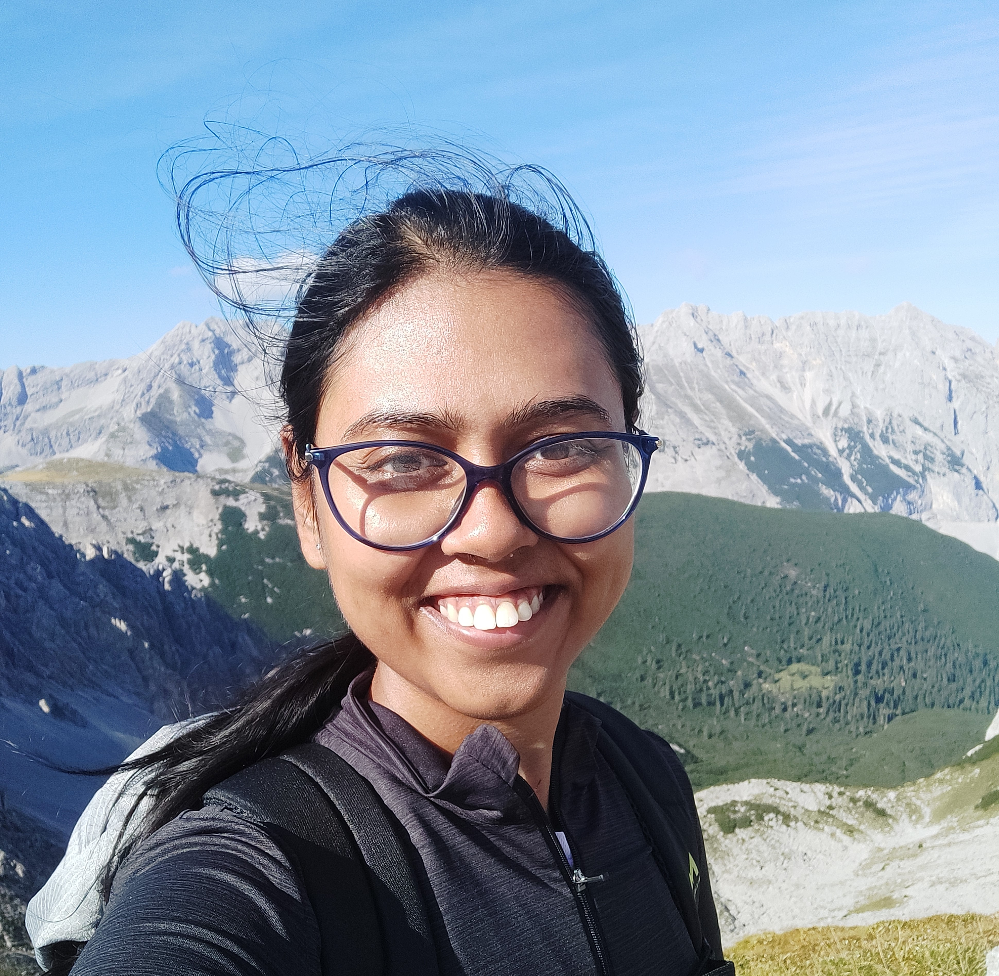

2026 · Theoretical Computer Science · 186:116226
Polynomial-time algorithms for PATH COVER and PATH PARTITION on trees and graphs of bounded treewidth
Florent Foucaud, Atrayee Majumder, Tobias Mömke, and Aida Roshany-Tabrizi
I am an early-career researcher, and my research lies at the intersection of graph theory, combinatorics, and combinatorial optimization, with interests in approximation algorithms and streaming algorithms.
I am actively looking for research or teaching opportunities. Please contact me at atu.tua@gmail.com.

My recent research focuses on developing approximation algorithms for variants of the Traveling Salesman Problem (TSP) and degree constrained network design problems in classical and semi-streaming models, path cover problems in structured graphs, and combinatorial questions arising from tree packing theorem.
Keywords: Path cover and partition; (1,2)-TSP; T-connectors; Eulerian T-connectors; Survivable network design problem (SNDP); Degree-bounded Steiner network design problem (DBSNP).
I did my Ph.D. in graph theory and combinatorics, and my thesis is a study of numerous structural and combinatorial properties of different dimensional parameters of graphs (such as local boxicity, threshold dimension, and cubicity) and partially ordered sets (posets).
Before starting theoretical research as a PhD student, I worked in the domain of image processing and machine learning during my Masters research and mathematical genomics during my tenure as a research project assistant.
2026 · Theoretical Computer Science · 186:116226
Florent Foucaud, Atrayee Majumder, Tobias Mömke, and Aida Roshany-Tabrizi
2025 · Electronic Journal of Combinatorics, 32(1)
Mathew C. Francis, Atrayee Majumder, and Rogers Mathew
2025 · CALDAM · LNCS 15536, 147–159
Florent Foucaud, Atrayee Majumder, Tobias Mömke, and Aida Roshany-Tabrizi
Best student presentation — presented by Aida Roshany-Tabrizi
2022 · Discrete Mathematics · 345(12):113085
Atrayee Majumder and Rogers Mathew
2022 · WG · LNCS 13453, 244–256
Mathew C. Francis, Atrayee Majumder, and Rogers Mathew
2021 · Order · 38(1):13–19
Atrayee Majumder, Rogers Mathew, and Deepak Rajendraprasad
2016 · IEEE IACC · 262–267
Jayanta Kumar Das, Atrayee Majumder, Pabitra Pal Choudhury, and Biswarup Mukhopadhyay
2015 · Women in Computing and Informatics · 419–425
Atrayee Majumder, Srija Chowdhury, and Jaya Sil
03 / Experience
October 2024 – December 2025
University of West Bohemia in Pilsen (ZCU), Czech Republic
Department of Mathematics · Supervisor: Prof. Tomáš Kaiser
Supported by the Academic Career in Pilsen program, 2024 and 2025 cycles.
January 2023 – July 2024
University of Augsburg (UA), Germany
Faculty of Applied Computer Science
Resource Aware Algorithmics (RAA) · Supervisor: Prof. Tobias Mömke
Supported by DFG project: Novel approximation techniques for Traveling Salesman Problems.
2016 – 2023
Indian Institute of Technology Kharagpur (IIT-KGP)
Thesis: A study on various dimensional parameters of graphs and posets
Supervisor: Prof. Rogers Mathew · Joint supervisor: Prof. Partha Bhowmick
August 2015 – March 2016
Indian Statistical Institute, Kolkata
Applied Statistics Unit
Home of Mathematical Genomics · Supervisor: Prof. Pabitra Pal Choudhury
2013 – 2015
Indian Institute of Engineering Science and Technology (IIEST)
Thesis: Non frontal face recognition from frontal face images
Supervisor: Prof. Jaya Sil
2008 – 2012
West Bengal University of Technology, India
2025 · University of West Bohemia
Matching theory (instructor: Prof. Tomáš Kaiser): matching algorithms and the matching polytope.
2017 – 2021 · IIT Kharagpur
Advanced Graph Theory (instructors: Prof. Rogers Mathew and Prof. Bhargab B. Bhattacharya); Algorithms Design and Analysis (instructor: Prof. Swagato Sanyal); Algorithms I and II (instructor: Prof. Abhijit Das); Programming and Data Structures, including theory (instructor: Prof. Palash Dey) and laboratory classes (instructor: Prof. Partha Bhowmick).
Academic service
Order, CALDAM, WAOA, IWOCA, MFCS, and DISC.